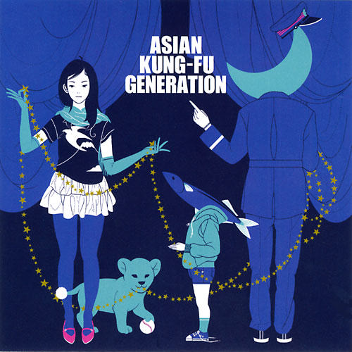
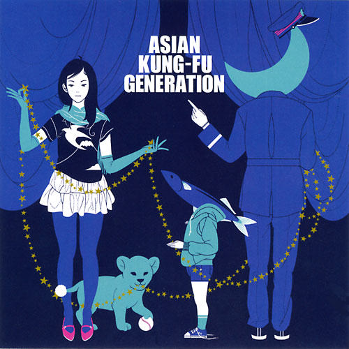

1位:リライト
某錬金術師の主題歌である。このアジカン知らない人でもこの曲は知っている。
いや、もはやこの曲しか知らない人も多いかもしれない。
この曲で認知度を得たが、この曲のせいでハガレンの一発屋とも言われている。
まぁ、しょうがないのかな？ちなみにねもと的にはこの曲は一位ではない。
2位:ブルートレイン

某錬金術師の主題歌である。このアジカン知らない人でもこの曲は知っている。
いや、もはやこの曲しか知らない人も多いかもしれない。
この曲で認知度を得たが、この曲のせいでハガレンの一発屋とも言われている。
まぁ、しょうがないのかな？ちなみにねもと的にはこの曲は一位ではない。
